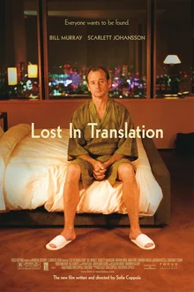

.jpg){kind=link}

Explore film ↗Lost in Translation
Sofia Coppola
DIRECTOR PROFILE
Sofia Carmina Coppola ( KOH-pə-lə; born May 14, 1971 in New York) is an American filmmaker and former actress.
LIFE & CAREER
Sofia Carmina Coppola ( KOH-pə-lə; born May 14, 1971 in New York) is an American filmmaker and former actress. She has received various accolades, including an Academy Award, two Golden Globe Awards, a Golden Lion, and a Cannes Film Festival Award as well as nominations for three BAFTA Awards and a Primetime Emmy Award. Her parents are filmmakers Eleanor and Francis Ford Coppola, and she made her acting debut as an infant in her father's acclaimed crime drama The Godfather (1972).
Adapted excerpt from Wikipedia, CC BY-SA 4.0. Pronunciation notes omitted.
Read the full biographyImage: LucaFazPhoto. Source & rights: CC BY-SA 4.0 ↗.
Profile reference: Director background ↗
Open this director checklist ↗
A selection of this director’s films available in the archive.

Explore film ↗Sofia Coppola